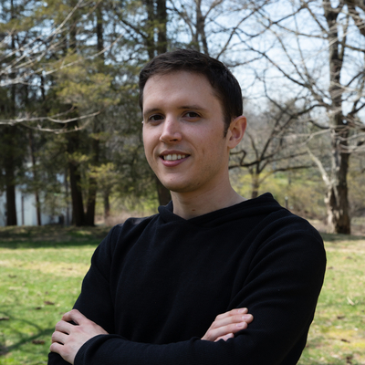

I am an associate research scientist at the Lamont-Doherty Earth Observatory (LDEO), Columbia University, New York. I am a geophysicist using data and theory to understand Earth’s mechanisms. My current research focuses on the processes leading to the spatio-temporal localization of deformation within the crust. To investigate this, I study faults across a wide range of scales—from monitoring large fault zones over several decades (specifically before and after major earthquakes) to analyzing the elusive seismicity of stable continental regions and human-induced earthquakes related to geothermal energy extraction. My approach to discovery combines the creation of detailed earthquake catalogs via cutting-edge data-mining techniques—including deep learning and physics-based methods—with the development of novel analytical frameworks to provide new constraints on fault behavior and earthquake physics.
Click here to see my CV (last updated 2026-04-27).
Check out this web page for up-to-date contact information: ebeauce@ldeo.columbia.edu